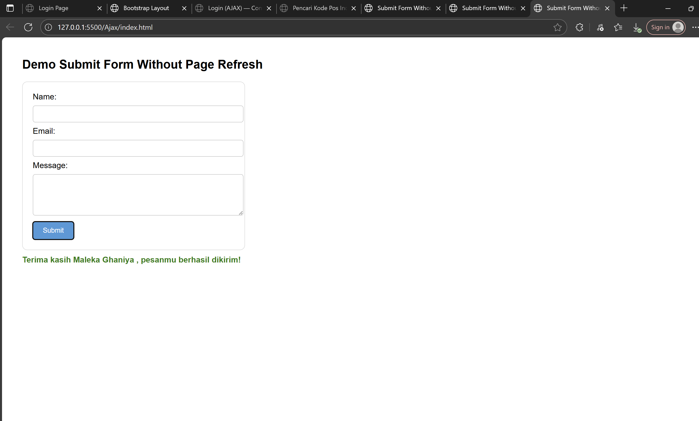

Di pertemuan kali ini saya mempelajari tentang AJAX. AJAX adalah singkatan dari Asynchronous JavaScript and XML, yaitu sekumpulan teknologi web yang memungkinkan aplikasi web untuk berkomunikasi dengan server di latar belakang, sehingga hanya sebagian kecil dari halaman yang perlu diperbarui tanpa memuat ulang seluruh halaman secara penuh.
berikut merupakan tugas yang pak fb berikan hari ini
-
Submit Form Without Page Refresh

saya menggunakan analogi php, walaupun tidak benar benar menggunakan xampp dan php.